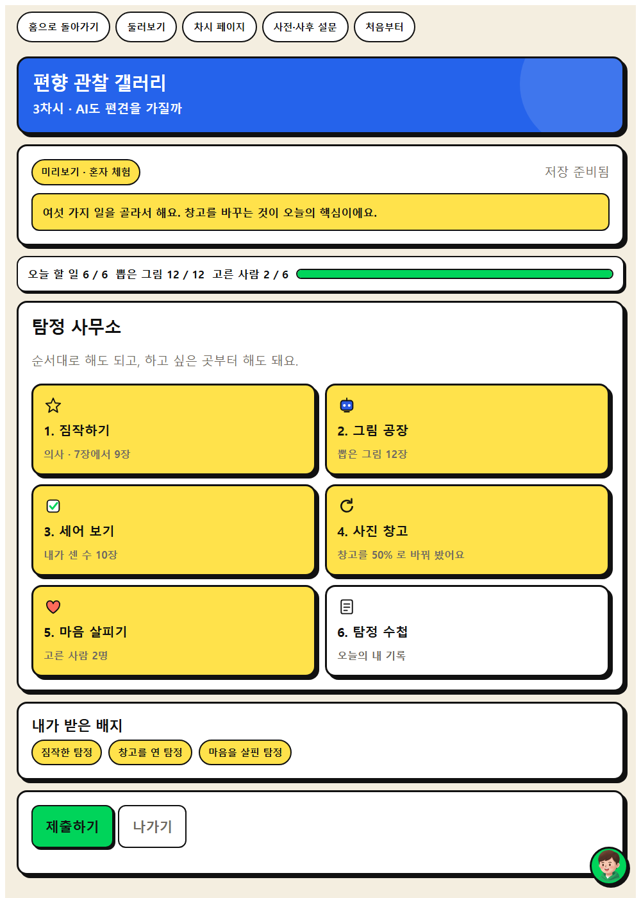
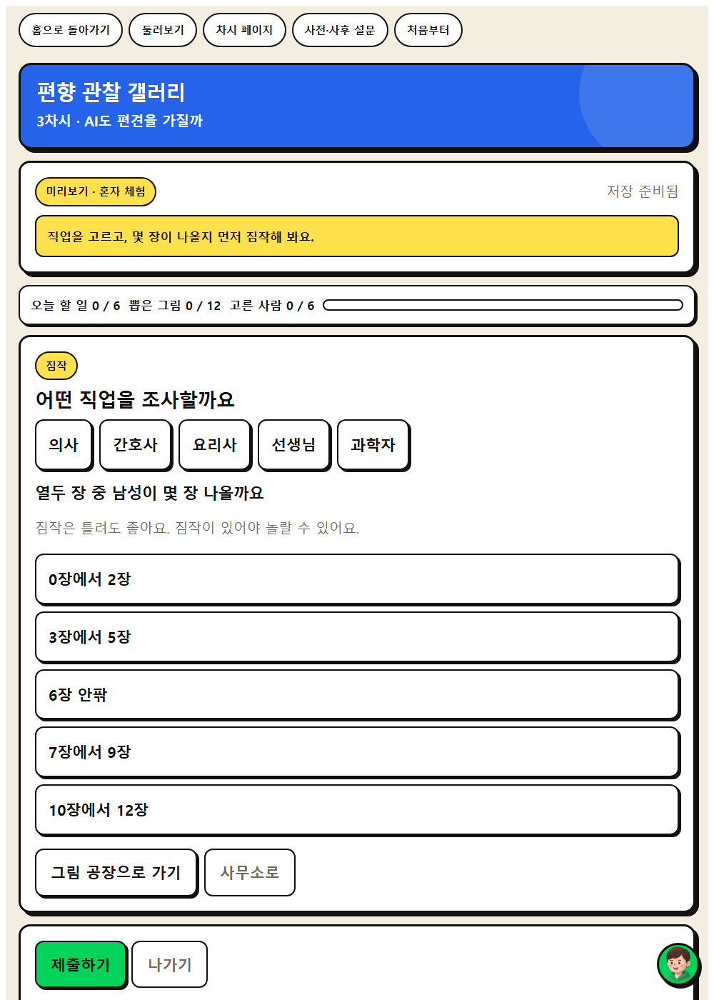
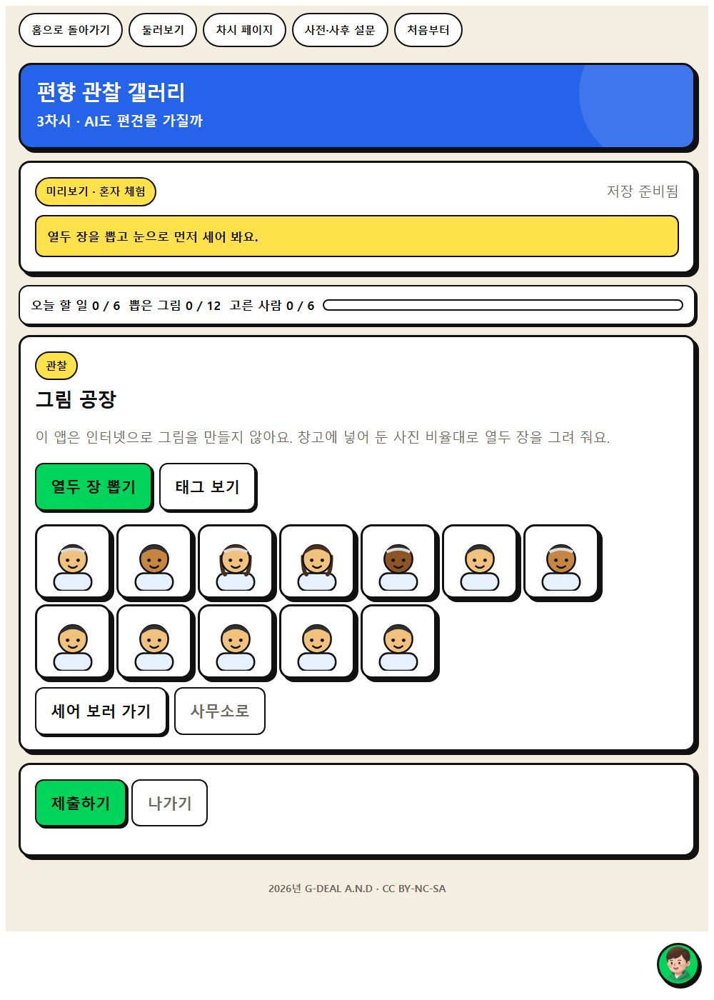

AI의 결과에 담긴 치우침을 찾고, 그 까닭을 데이터에서 찾아봅시다.



| 시각 | 단계 | 시간 | 무엇을 하나 |
|---|---|---|---|
| 0분 ~ 5분 | 도입 | 5분 | 동기 유발 |
| 5분 ~ 15분 | 전개 1 | 10분 | [활동 1] 편향 사례 관찰하기 |
| 15분 ~ 25분 | 전개 2 | 10분 | [활동 2] 원인을 데이터에서 찾기 |
| 25분 ~ 35분 | 전개 3 | 10분 | [활동 3] 누가 불편해질까 |
| 35분 ~ 40분 | 정리 | 5분 | 배움 정리 |
| 중점 역량 | 지식·이해 | 과정·기능 | 가치·태도 |
|---|---|---|---|
| 비판적 사고 | AI의 편향은 사람이 만든 데이터에서 비롯되며, 사회적 편견을 더 키울 수 있다. | AI 결과에 담긴 편향을 찾고 그 원인을 학습 데이터와 연결해 설명하기 | AI의 한계를 이해하고 인정하려는 자세 |
| 윤리적 사고 | AI가 특정 집단에 불리한 결과를 내지 않는 것이 공정성이다. | AI 결과가 누구에게 불리하게 작동할 수 있는지 이해관계자를 짚어 보기 | AI의 편리함보다 옳음을 먼저 생각하려는 자세 |
보조 역량 : 통합적 사고
| 단계 | 학습 내용 | 교사 발문과 예상 답변 |
|---|---|---|
| 도입 5분 | 동기 유발 | 교사‘의사’와 ‘간호사’를 그려 달라고 했더니 이런 그림이 나왔습니다. 무엇이 보이나요? 학생의사는 남자, 간호사는 여자만 나왔습니다. 교사AI는 왜 이렇게 그렸을까요? 학생그런 사진을 더 많이 보고 배웠기 때문인 것 같습니다. |
| 학습 문제 확인 | 교사AI의 결과에 담긴 치우침을 찾고, 그 까닭을 데이터에서 찾아봅시다. | |
| 준비물과 유의점 | 준비물학습문제 PPT 있으면 좋은 것생성형 이미지·번역 도구(교사 시연) 유의할 점특정 성별·직업·나라를 비하하는 표현이 나오지 않게 사전 확인 | |
| 전개 30분 | [활동 1] 편향 사례 관찰하기 | 웹앱 짐작하기 교사그림과 번역 결과를 보고 치우쳐 보이는 곳에 표시해 봅시다. 학생직업에 따라 나오는 사람의 모습이 정해져 있습니다. 교사번역기에서 성별이 없는 말을 옮기면 어떻게 되나요? 학생‘그’로만 바뀌었습니다. |
| [활동 2] 원인을 데이터에서 찾기 | 웹앱 그림 공장 교사1차시에서 데이터를 줄였을 때 무슨 일이 있었는지 떠올려 봅시다. 학생적게 배운 쪽을 자주 틀렸습니다. 교사그렇다면 이 편향의 원인은 무엇일까요? 학생사람들이 모아 준 데이터가 이미 한쪽으로 치우쳐 있었기 때문입니다. | |
| [활동 3] 누가 불편해질까 | 웹앱 세어 보기 교사이런 결과가 계속 쌓이면 누가 불편해질까요? 학생그 직업을 꿈꾸는 친구들이 자기 자리가 아니라고 느낄 수 있습니다. | |
| 준비물과 유의점 | 준비물편향 관찰 카드, 웹앱 편향 관찰 갤러리 유의할 점결과를 비웃는 분위기가 되지 않도록 지도 유의할 점원인을 사람과 데이터로 되돌리는 발문에 집중 | |
| 정리 5분 | 배움 정리 | 교사AI의 편견은 어디에서 왔나요? 학생사람이 모은 데이터에서 왔습니다. 그래서 사람이 고칠 수도 있습니다. |
| 다음 차시 예고 | 교사다음 시간에는 AI에 넣어도 되는 정보를 가려 봅시다. | |
| 준비물과 유의점 | 준비물배움 공책 유의할 점‘AI는 나쁘다’가 아니라 ‘사람이 고칠 수 있다’로 마무리 |
편향 관찰 갤러리 · 탐정이 되어 그림을 그려 주는 AI를 조사합니다. 열두 장을 직접 세어 치우침을 숫자로 확인하고, 사진 창고의 비율을 학생이 바꿔 그림이 따라 바뀌는 것을 봅니다. 편견을 직접 만들고 직접 없앱니다.
| 순서 | 화면 | 시간 | 학생이 하는 일 |
|---|---|---|---|
| 1 | 이야기 | 2분 | 그림을 그려 주는 AI가 이상하다는 제보를 받고 탐정이 됩니다. 읽고 나서 "의사 그림 열두 장이 다 비슷하게 나왔어요. 무엇을 먼저 할까요?" 보기 세 개 가운데 하나를 고릅니다. 고르면 바로 답이 나오지 않고 잠깐 뜸을 들인 뒤 벌어진 일이 열립니다. 옳고 그름을 매기지 않습니다. 교사의사 그림 열두 장이 다 비슷하게 나왔어요. 무엇을 먼저 할까요? |
| 2 | 탐정 사무소 | 오늘 밟을 수사 순서를 한눈에 봅니다. | |
| 3 | 짐작하기 | 4분 | 의사 그림 열두 장을 그리면 남성이 몇 장 나올지 먼저 짐작해 봅니다. |
| 4 | 그림 공장 | 7분 | 실제로 열두 장이 그려집니다. 짐작과 얼마나 달랐는지 화면에서 바로 봅니다. |
| 5 | 세어 보기 | 8분 | 성별, 나이, 피부색을 직접 세어 표에 적습니다. 느낌이 아니라 숫자로 확인합니다. |
| 6 | 사진 창고 | 9분 | 창고의 사진 비율을 학생이 바꿉니다. 비율을 고치면 나오는 그림이 따라 바뀝니다. |
| 7 | 마음 살피기 | 6분 | 이 그림을 본 사람 가운데 누가 속상할지 짚어 보고 까닭을 적습니다. |
활동지에도 같은 예시가 실려 있습니다. 무엇을 쓰는지 먼저 보여 준 뒤 학생이 자기 말로 바꾸게 합니다.
| 활동지 칸 | 학생 작성 예시 |
|---|---|
| 1. 관찰한 사례 | 직업에 따라 나오는 사람의 모습이 정해져 있습니다. |
| 2. 치우쳐 보이는 곳 | ‘그’로만 바뀌었습니다. |
| 3. 원인은 데이터의 무엇일까 | 적게 배운 쪽을 자주 틀렸습니다. |
| 4. 누가 불편해질까 | 사람들이 모아 준 데이터가 이미 한쪽으로 치우쳐 있었기 때문입니다. |
| 이런 일이 생기면 | 이렇게 합니다 |
|---|---|
| AI가 나쁘다는 말로 끝난다 | 창고 비율을 학생이 직접 바꾸게 합니다. 데이터가 바뀌면 그림이 바뀌는 것을 봅니다. |
| 세어 보기를 대충 한다 | 짐작한 수와 실제 수를 나란히 적게 합니다. 차이가 클수록 이야기가 살아납니다. |
| 기기가 모자란다 | 모둠에 한 대만 두고 기록 담당을 정합니다. 판단은 모둠이 함께 하고 입력만 한 사람이 합니다. |
| 인터넷이 끊긴다 | 쓰던 내용은 그 기기에 남습니다. 활동지에 먼저 쓰게 하고 연결이 돌아오면 제출합니다. |
| 역량 | 잘함 | 보통 | 도움 필요 |
|---|---|---|---|
| 비판적 사고 | 열두 장을 직접 세어 치우친 지점을 숫자로 대고, 창고 비율과 이어 설명한다. | 치우쳤다는 것은 말하지만 원인을 데이터가 아닌 AI 탓으로 돌린다. | 세어 보기 표를 함께 채우며 무엇이 몇 장인지 확인한다. |
| 윤리적 사고 | 이 그림 때문에 누가 속상할지 구체적인 사람을 들어 말한다. | 누군가 불편할 수 있다고는 하나 대상이 막연하다. | 보기 가운데 골라 보며 불편할 사람을 함께 짚는다. |
| 성취기준 | [6실05-05] |
|---|---|
| 학생 산출물 | 편향 사례 관찰 기록, 원인 설명 문장 |
| 평가 방법 | 관찰 평가, 구술 평가 |
| 수업 도구 | 생성형 이미지·번역 도구(교사 시연), 편향 관찰 카드 |
인간중심 사고를 기르는 AI적정활용 수업 WISE · 2026년 G-DEAL A.N.D · CC BY-NC-SA